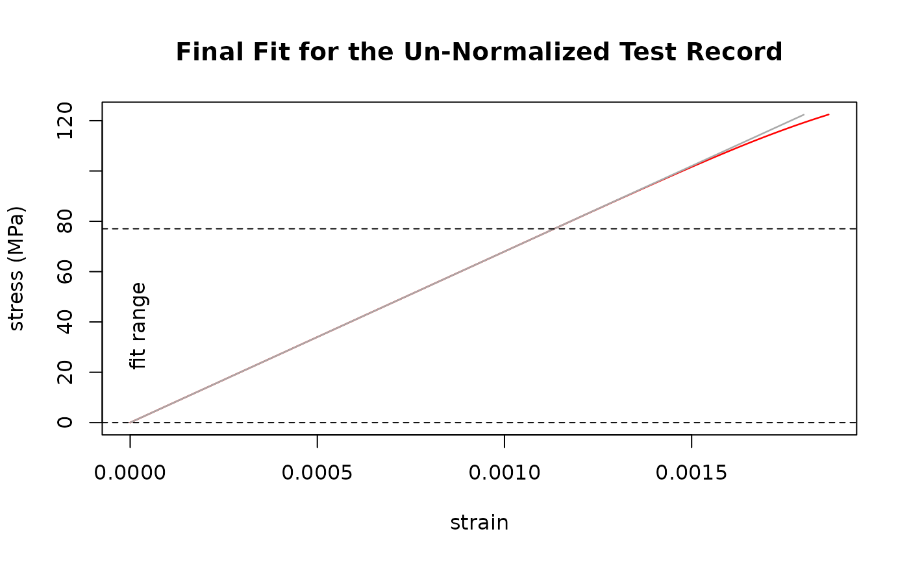

Run the SDAR algorithm as standardized in ASTM E3076-18. Will
use numerous linear regressions (.lm.fit() from the stats-package) and
can be painfully slow for test data with high resolution.
See the article on validation
on the package-website for further information.
Arguments
- data
Data record to analyze. Labels of the data columns will be used as units.
- x, y
<
tidy-select> Columns with x and y within data.- verbose, showPlots
Give informational messages and plots during computation. Defaults to
"report"to only show a report and a plot of the final fit. Set to"all"to also give messages from the individual steps. Set to"none"to be quiet. Can be abbreviated.- savePlots
Set to
TRUEto get plot-functions with the result for later use.
Value
A list containing a data.frame with the results of the final fit,
lists with the quality- and fit-metrics, and a list containing the crated
plot-functions (if savePlots = TRUE).
Note
The function can use parallel processing via the furrr-package. To use this feature, set up a plan other than the default sequential strategy beforehand.
References
Lucon, E. (2019). Use and validation of the slope determination by the analysis of residuals (SDAR) algorithm (NIST TN 2050; p. NIST TN 2050). National Institute of Standards and Technology. https://doi.org/10.6028/NIST.TN.2050
Standard Practice for Determination of the Slope in the Linear Region of a Test Record (ASTM E3076-18). (2018). https://doi.org/10.1520/E3076-18
Graham, S., & Adler, M. (2011). Determining the Slope and Quality of Fit for the Linear Part of a Test Record. Journal of Testing and Evaluation - J TEST EVAL, 39. https://doi.org/10.1520/JTE103038
See also
sdar.lazy() for the random sub-sampling modification of the
SDAR-algorithm.
Examples
# Synthesize a test record resembling Al 6060 T66
# (Values according to Metallic Material Properties
# Development and Standardization (MMPDS) Handbook).
# Explicitly set names to "strain" and "stress",
# set effective number of bits in the x-data to 12
# to limit the number of data points.
Al_6060_T66 <- synthesize_test_data(
slope = 68000,
yield.y = 160,
ultimate.y = 215,
ultimate.x = 0.091,
x.name = "strain",
y.name = "stress",
enob.x = 12
)
# use sdar() to analyze the synthetic test record
# will print a report and give a plot of the final fit
# \donttest{
result <- sdar(Al_6060_T66, strain, stress)
#> Determination of Slope in the Linear Region of a Test Record:
#> SDAR-algorithm
#> Data Quality Metric: Digital Resolution
#> x
#> Relative x-Resolution: 0.333333333333333
#> % at this resolution: 0
#> % in zeroth bin: 100
#> --> pass
#> y
#> Relative y-Resolution: 0.333333333333333
#> % at this resolution: 14.4578313253012
#> % in zeroth bin: 85.5421686746988
#> --> pass
#> Data Quality Metric: Noise
#> x
#> Relative x-Noise: 1.10867931147058e-14
#> --> pass
#> y
#> Relative y-Noise: 0.180268584275293
#> --> pass
#> Fit Quality Metric: Curvature
#> 1st Quartile
#> Relative Residual Slope: 0.00504545399430856
#> Number of Points: 13
#> --> pass
#> 4th Quartile
#> Relative Residual Slope: -0.00640617723442051
#> Number of Points: 13
#> --> pass
#> Fit Quality Metric: Fit Range
#> relative fit range: 0.661751152073733
#> --> pass
#> Un-normalized fit
#> Final Slope: 68015.7632283683 MPa
#> True Intercept: 0.000123506433826068 MPa
#> y-Range: 0 MPa - 74.0374755859375 MPa

# }